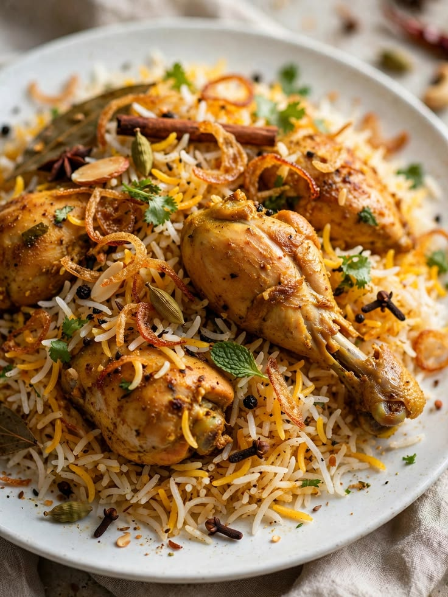
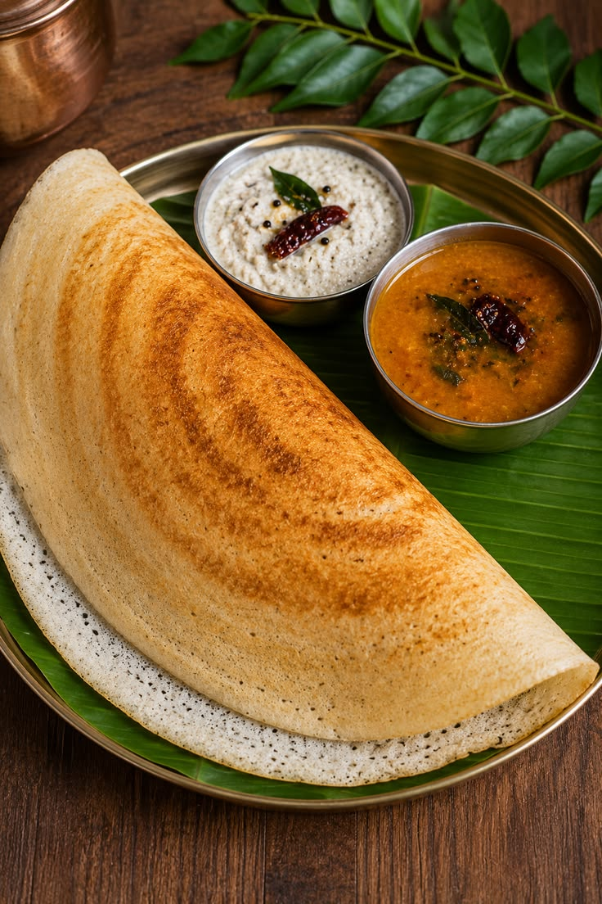
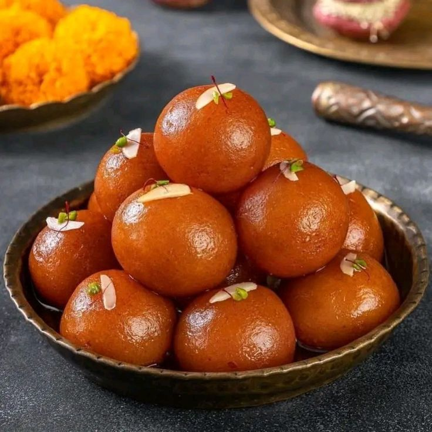

Famous Indian Foods
Indian cuisine is famous for its rich flavours, spices and variety.
Every region of India has its own special dishes and cooking traditions.
5 Famous Indian Dishes
- Butter Chicken
- Biryani
- Masala Dosa
- Chole Bhature
- Gulab Jamun
Food Categories
- North Indian
- South Indian
- Street Food
- Desserts
Food Descriptions
- Biryani
- A fragrant rice dish cooked with spices, vegetables or meat.
- Masala Dosa
- A crispy South Indian dosa served with spiced potato filling.
- Gulab Jamun
- A popular sweet made from milk solids and soaked in sugar syrup.
Food Images



Navigation
Home |
Destinations |
Places |
Gallery |
Contact